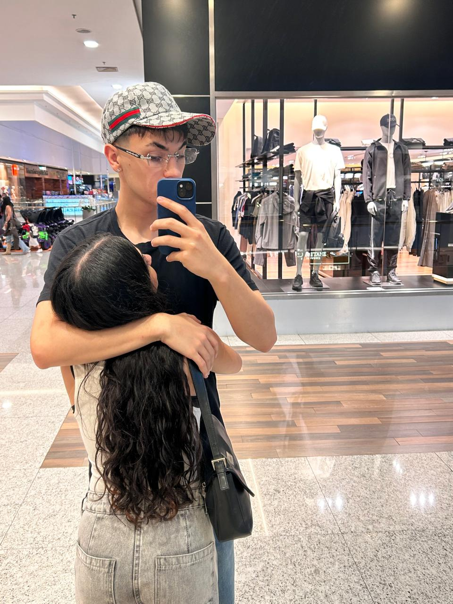
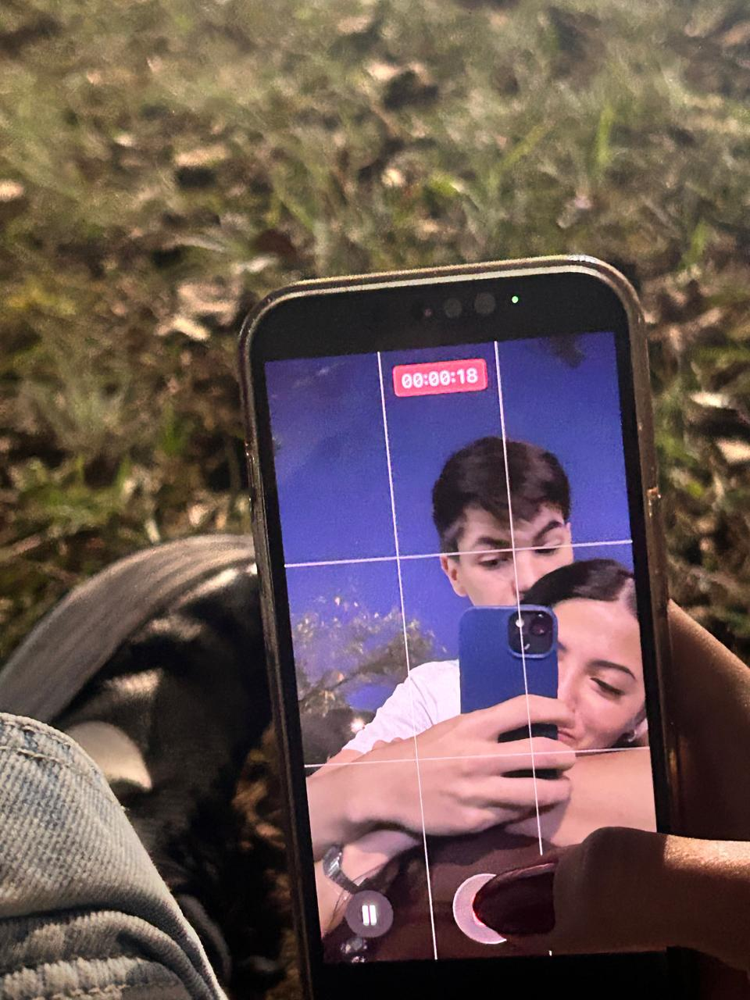
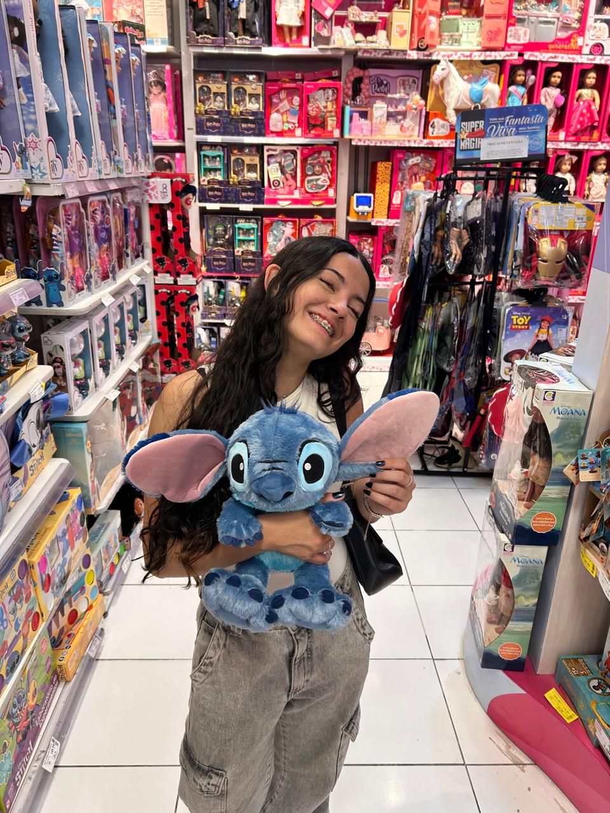
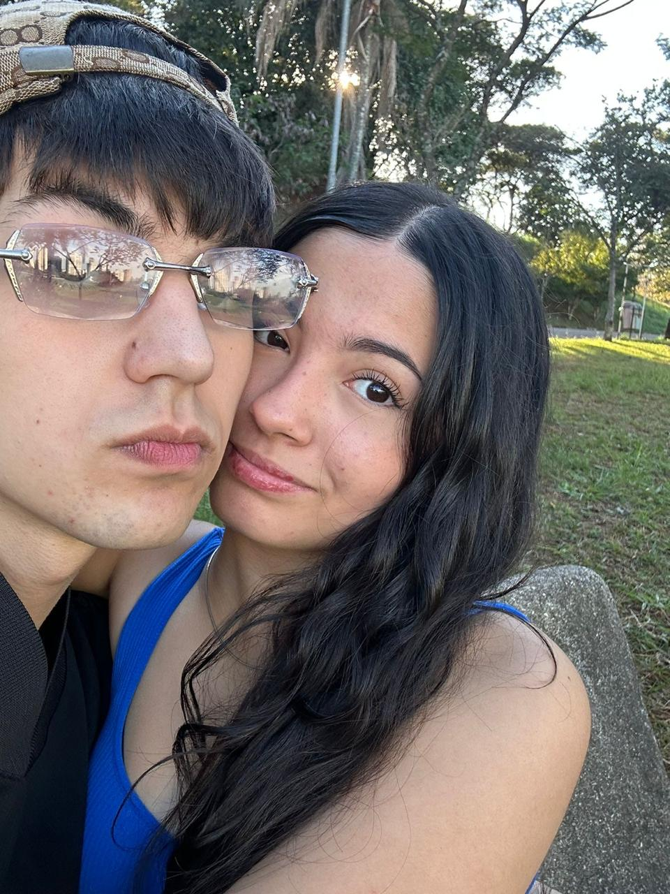
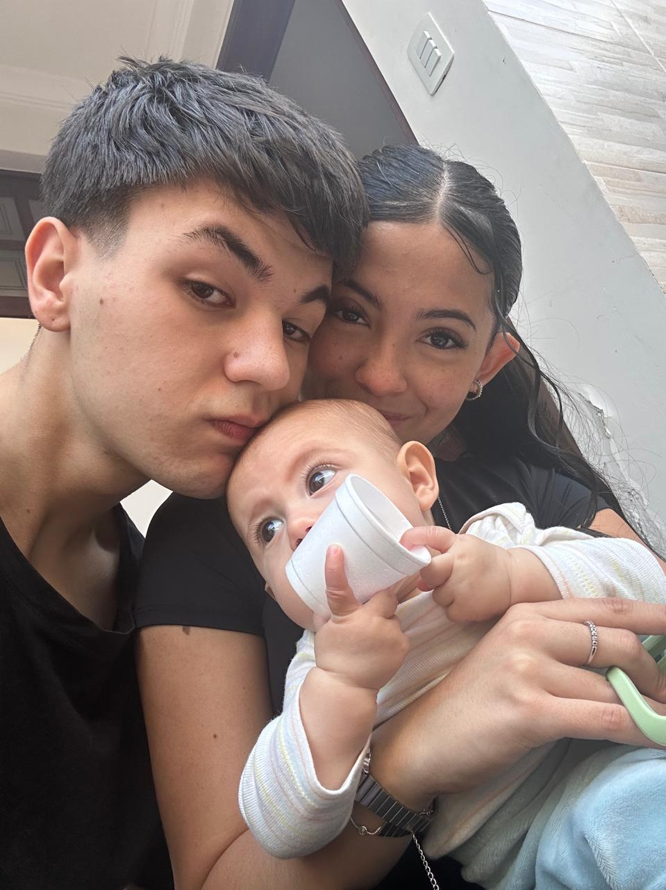

01 · Leveza
Os momentos em que bastava estar junto.
para entrar, coloque a data que a gente se resolveu.
feito com carinhoEntre tantos dias comuns, existiram momentos que se tornaram especiais simplesmente porque aconteceram.

Algumas lembranças continuam tendo seu próprio lugar.
Nem tudo que marcou a gente aconteceu em grandes ocasiões. Às vezes, foram os detalhes que fizeram tudo ser especial.

Os momentos em que bastava estar junto.

As pequenas coisas que viravam motivos para sorrir.

Os dias em que uma companhia fazia diferença.

O valor que certas lembranças ganham com o tempo.
E essas são apenas algumas das lembranças.
Yumi,
Quando olho para tudo o que vivemos, percebo que uma história não é feita apenas dos dias perfeitos, mas também daquilo que aprendemos com cada experiência.
Guardo com carinho os momentos em que sorrimos, as conversas, as brincadeiras e os detalhes que, na hora, pareciam tão simples.
Também entendo que gostar de alguém envolve aprender, reconhecer os próprios erros e crescer. Nem sempre a gente sabe fazer tudo da melhor forma, mas isso não tira o valor do que foi vivido nem a importância de se tornar alguém melhor.
Não escrevo isso para cobrar nada do futuro. Só queria que essa parte da nossa história tivesse um lugar bonito para existir, com tudo o que significou e com o carinho que merece.
Independentemente dos caminhos que a vida apresentar, espero que você encontre motivos para sorrir, paz nos dias difíceis e pessoas que cuidem bem do seu coração.
e nunca se esqueça disso, você é e sempre será, a minha paz ❤️🩹
Com carinho,
Vilares.
Algumas histórias deixam marcas bonitas simplesmente por terem acontecido.
Vilares ♡